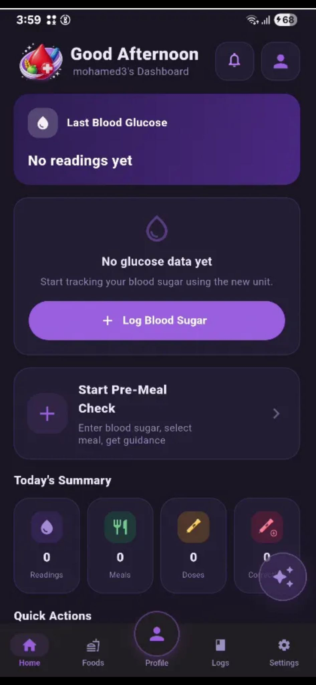

Our Team
Project Team

Ali Jaffar Khalaf
Developer
Ammar Ali Matrook
Developer & Designer
Mohamed Ahmed Alaali
Developer
Smart Type 1 Diabetes Support
DiabeCare is a smart mobile application designed to support people with Type 1 diabetes by connecting blood glucose tracking, meal logging, carbohydrate counting, insulin guidance, follow-up reminders, AI insights, and guardian support in one simple workflow.
Last Blood Glucose
About Project
DiabeCare was developed as a senior project to help users manage Type 1 diabetes more safely and clearly. The application focuses on daily diabetes decisions such as checking blood glucose, selecting meals, calculating carbohydrates, receiving insulin guidance, and reviewing previous records.
Many people with Type 1 diabetes need to make several decisions every day, including monitoring blood glucose, estimating carbohydrates, calculating insulin doses, and remembering follow-up checks. These tasks can become stressful, especially for children and users who need guardian support.
Core Features
Record and monitor blood glucose readings with clear status labels.
Select meals, calculate carbohydrates, and review meal details before making a decision.
Provide structured insulin guidance based on meal information and user settings.
View previous readings, meals, notes, and decisions in one organized place.
Review weekly glucose records using a simple table view.
Allow a guardian to follow and support the user through connected monitoring.
Use smart analysis to help users understand patterns and improve future decisions.
Workflow
The user records a blood glucose reading before the meal.
The user selects food items or enters custom meal information.
The app calculates carbohydrates and provides insulin guidance.
The app reminds the user to check blood glucose after the meal.
App Interface
Explore the main DiabeCare interfaces using the screen tabs and page buttons below.

Home screen with glucose status, quick actions, and follow-up reminders.
Our Team
Project Tools
These tools were used to design, develop, test, and publish the DiabeCare project.
Used to build the mobile application interface and main app screens.
Used for authentication, database, syncing, and cloud storage.
Used to support the AI Insights feature and smart summaries.
Used as the main development environment for coding the project.
Used to host and publish the project website publicly.
Used to build the public senior project website.
For project inquiries, feedback, or collaboration, contact the DiabeCare team through the official project email.
info@diabecare.life